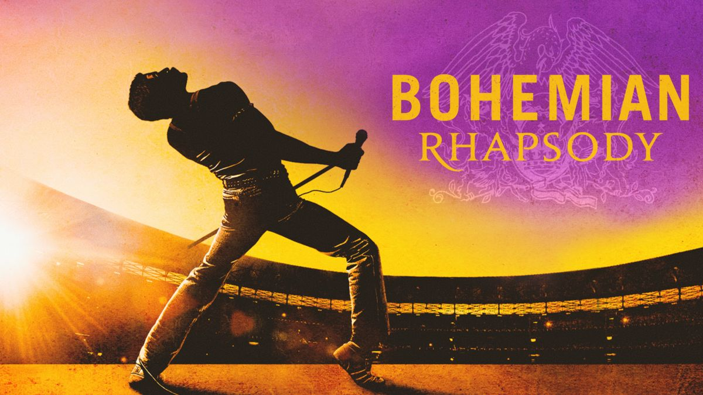

Directors: Bryan Singer, Dexter Fletcher
Bohemian Rhapsody is a 2018 biographical musical drama film that focuses on the life of Freddie Mercury, the lead singer of the British rock band Queen, from the formation of the band in 1970 to their 1985 Live Aid performance at the original Wembley Stadium. It was directed by Bryan Singer[a] from a screenplay by Anthony McCarten, and produced by Graham King and Queen manager Jim Beach. It stars Rami Malek as Mercury, with Lucy Boynton, Gwilym Lee, Ben Hardy, Joe Mazzello, Aidan Gillen, Tom Hollander, and Mike Myers in supporting roles. Queen members Brian May and Roger Taylor also served as consultants. A British-American venture, it was produced by Regency Enterprises, GK Films and Queen Films, and was distributed by 20th Century Fox.